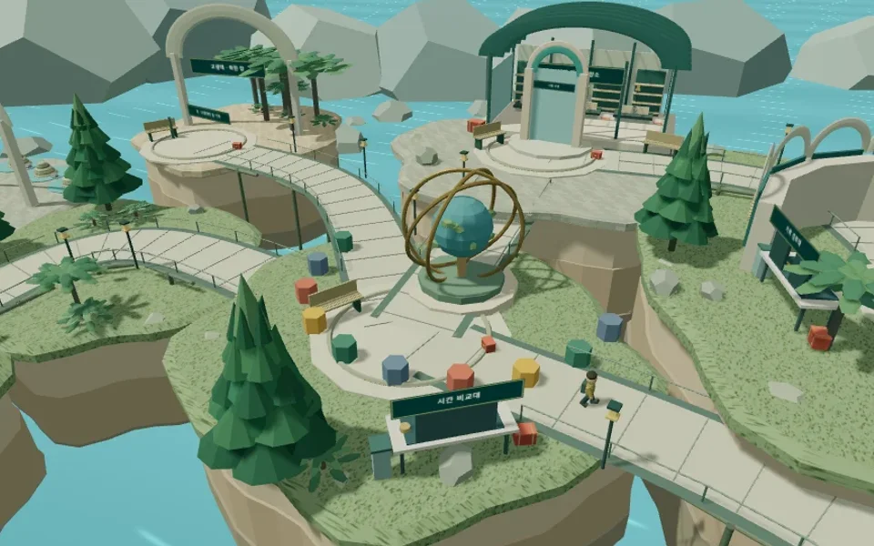

사건과 질문 만나기
짧은 도입 이야기와 NPC의 임무로 이번 차시의 질문을 확인합니다.
NET ZERO ECO-CITY와 화석 수사대는 고등학교 1학년을 위한 탐구 프로그램입니다. 학생은 가상 공간에서 임무를 받고 실제 자료를 조사한 뒤, 자신이 내린 판단의 근거와 한계를 설명합니다.

NET ZERO ECO-CITY에서는 탄소·에너지 자료와 도시 정책을 비교합니다. 건물의 소비·발전 조건을 바꾸어 실험하고, 자원과 시민의 접근성을 고려해 두 설계안을 검토합니다.
“이 정책으로 배출은 줄어들 수 있지만, 대중교통을 이용하기 어려운 사람은 어떻게 할까?”
화석 수사대에서는 생명 기록의 변화를 살피고 지질시대의 시간 비율을 복구합니다. 화석의 특징을 관찰한 뒤, 환경을 설명하는 데 어떤 근거가 더 필요한지 검토합니다.
“마디가 보인다는 것은 관찰한 사실이다. 그런데 이 생물이 살던 환경도 사진만으로 알 수 있을까?”
짧은 도입 이야기와 NPC의 임무로 이번 차시의 질문을 확인합니다.
그래프, 도시 사례, 화석 사진을 보고 출처·단위·관찰 사실을 확인합니다.
조건을 바꾸어 실험하거나 서로 다른 설명을 근거와 대조합니다.
자신의 판단을 유지하거나 수정한 이유를 적고 모둠과 비교합니다.
맵과 이야기는 탐구 장소와 순서를 안내합니다. 자료를 조사할 때는 별도 탐구 페이지로 이동해 읽고 작성합니다. 이동 조작이 어려우면 같은 탐구 자료로 바로 들어갈 수 있습니다.
NET ZERO에서는 조건을 바꾼 계산과 이전 선택을 비교하고, 화석 수사대에서는 관찰 기록과 해설을 다시 펼쳐 자신의 설명을 검토합니다. 게임 이동 속도와 보상은 평가 점수가 아닙니다.
이 프로그램은 가상 공간과 탐구 지원이 학생의 자료 해석, 근거를 활용한 설명, 판단 수정에 어떤 도움을 주는지 살펴보기 위해 개발하고 있습니다.
종이 활동과 비교할 때는 자료·과제·활동 시간·교사 안내를 맞추고, 학생의 첫 판단과 수정 과정, 최종 산출물을 같은 기준으로 검토할 필요가 있습니다. 학습 효과가 입증되었다고 소개하는 단계는 아닙니다.
두 프로그램의 3D 탐사 맵, 차시별 탐구 활동과 해설, 교사 도입 자료, 기기 내 기록 저장과 파일 내보내기를 사용할 수 있습니다.
지금의 코치는 미리 작성된 질문입니다. 생성형 AI API, 참여코드를 통한 기기 간 이어하기, 교사 대시보드의 자동 수집, 실시간 멀티플레이는 공개판에 연결되어 있지 않습니다.
기능과 수업 운영 조건 확인프로그램을 고르고 교사 설명자료로 차시 흐름을 살펴봅니다. 기기에서 저장과 내보내기를 한 번 확인한 뒤, 학생에게 학습공간과 제출 경로를 안내해 주세요.